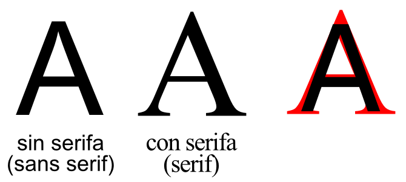
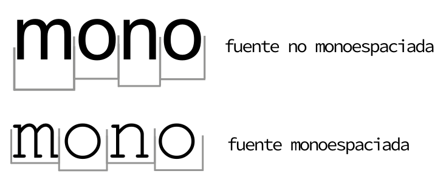
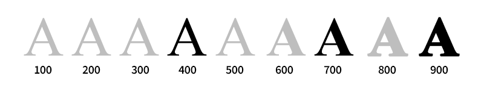
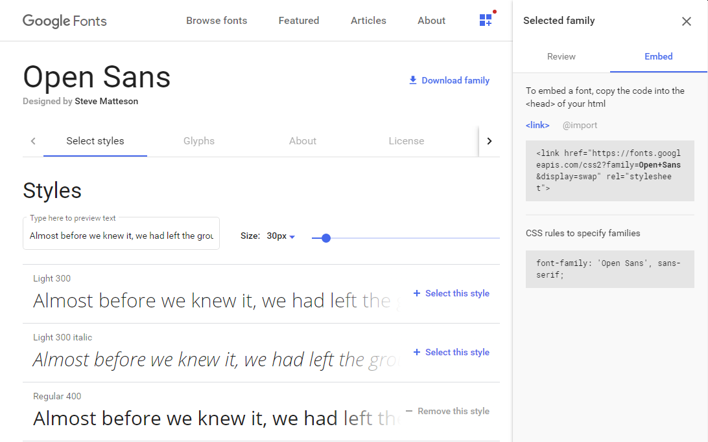
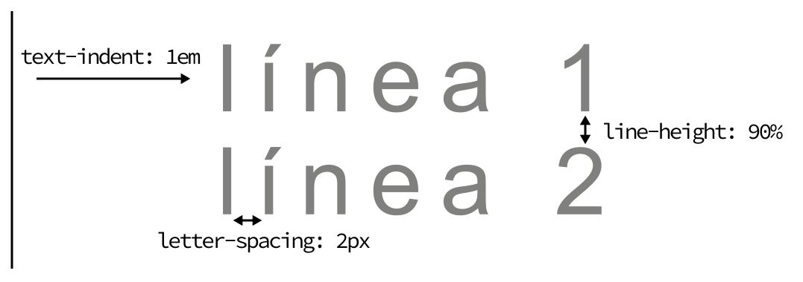
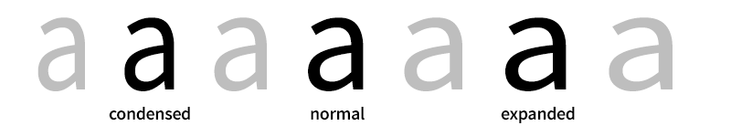

Fuentes y tipografías¶
Tipografías CSS¶
Las tipografías (también denominadas fuentes) son una parte muy importante del mundo de CSS. De hecho, son uno de los pilares del diseño web. La elección de una tipografía adecuada, su tamaño, color, espacio entre letras, interlineado y otras características pueden variar mucho, de forma consciente o inconsciente, la percepción en la que una persona interpreta o accede a los contenidos de una página.
Detalles de una tipografía¶
Existen multitud de características en las tipografías que convendría conocer antes de continuar, por lo que vamos a ver algunas de ellas:

*
Serifa: Las fuentes o tipografías que utilizan serifa o gracia, son aquellas que incorporan unos pequeños adornos o remates en los extremos de los bordes de las letras. Muchas de estas tipografías suelen terminar su nombre en <
Tradicionalmente, se han utilizado tipografías con serifa en medios impresos argumentando que dichos bordes ofrecen una mayor legibilidad que las tipografías de paloseco, ya que ayudan a reconocer más rápidamente las letras. En medios digitales, las tipografías de paloseco suelen ser más comunes puesto que dan un aspecto más limpio y ayudan a que se canse menos la vista del usuario. No obstante, todo esto puede ser muy subjetivo y está sujeto a diferentes interpretaciones.
- Monoespaciada: Por otro lado, existe un tipo de tipografía denominada fuente monoespaciada, que se basa en que cada una de sus letras tienen exactamente el mismo ancho. Son muy útiles para tareas de programación o emuladores de terminal, donde se leen mejor líneas con estas características, ya que no queremos que una línea sea más corta dependiendo de su contenido.

Propiedades básicas¶
Existe un amplio abanico de propiedades CSS para modificar las características básicas de las tipografías a utilizar. Aunque existen muchas más, a continuación, veremos las propiedades CSS más básicas para aplicar a cualquier tipo de tipografía:
| Propiedad | Valor | Significado |
|---|---|---|
font-family |
fuente | Indica el nombre de la fuente (tipografía) a utilizar. |
font-size |
Indica el tamaño de la fuente. | |
font-style |
normal | italic |
font-weight |
peso | Indica el peso (grosor) de la fuente (100-800). |
Con ellas podemos seleccionar tipografías concretas, específicar su tamaño, estilo o grosor.
Familia tipográfica¶
Empezaremos por la más lógica, la propiedad CSS para seleccionar una familia tipográfica concreta. Con esta propiedad, denominada font-family , podemos seleccionar seleccionar cualquier tipografía simplemente escribiendo su nombre.
Si dicho nombre está compuesto por varias palabras separadas por un espacio, se aconseja utilizar comillas simples para indicarla (como se ve en el segundo ejemplo):
body {
font-family: Verdana;
font-family: 'PT Sans'; /* Otro ejemplo */
}
Esta es la forma más básica de indicar una tipografía. Sin embargo, hay que tener en cuenta un detalle muy importante: estas fuentes sólo se visualizarán si el usuario las tiene instaladas en su sistema o dispositivo. En caso contrario, se observarán los textos con otra tipografía <
Esto convierte una tarea a priori simple, en algo muy complejo, puesto que los sistemas operativos (Windows, Mac, GNU/Linux) tienen diferentes tipografías instaladas. Si además entramos en temas de licencias y tipografías propietarias, la cosa se se vuelve aún más compleja.
Consejo: La página FontFamily.io incorpora un sencillo formulario para mostrar información sobre determinadas tipografías y como se mostrarían en diferentes sistemas (Windows, Mac OS, GNU/Linux, Android, iOS, Windows Phone, etc...). Más adelante, veremos la regla
@font-facede CSS3, que permite solucionar este problema y la usan sistemas como Google Fonts.
Un primer y sencillo paso para paliar (en parte) este problema, es añadir varias tipografías alternativas, separadas por comas, lo que además se considera una buena práctica de CSS:
div {
font-family: Vegur, 'PT Sans', Verdana, sans-serif;
}
De esta forma, el navegador busca la fuente Vegur en nuestro sistema, y en el caso de no estar instalada, pasa a buscar la siguiente (PT Sans), y así sucesivamente. Se recomienda especificar al menos 2 ó 3 tipografías diferentes.
Consejo: Como última opción de
font-familyse recomienda utilizar una palabra clave denominada <> (fuente segura). Esta fuente segura no es una tipografía específica, sino una palabra clave con la que se denomina una categoría. Esto indica al navegador que debe buscar una tipografía instalada en el sistema que entre dentro de la misma categoría.
Las palabras clave de fuentes seguras son las siguientes:
| Fuente | Significado | Fuentes de ejemplo |
|---|---|---|
serif |
Tipografía con serifa | Times New Roman, Georgia... |
sans-serif |
Tipografía sin serifa | Arial, Verdana, Tahoma... |
cursive |
Tipografía en cursiva | Sanvito, Corsiva... |
fantasy |
Tipografía decorativa | Critter, Cottonwood... |
monospace |
Tipografía monoespaciada | Courier, Courier New... |
Tamaño de la tipografía¶
Otra de las propiedades más utilizadas con las tipografías es font-size , una tipografía que permite especificar el tamaño que tendrá la fuente que vamos a utilizar:
| Propiedad | Valor | Tipo de medida |
|---|---|---|
font-size |
xx-small | x-small |
font-size |
smaller | larger |
font-size |
Específica (tamaño exacto) |
Se pueden indicar tres tipos de valores:
* Medidas absolutas: Palabras clave como medium que representan un tamaño medio (por defecto), small: tamaño pequeño, x-small: tamaño muy pequeño, etc... * Medidas relativas: Palabras clave como smaller que representan un tamaño un poco más pequeño que el actual, o larger que representa un tamaño un poco más grande que el actual. * Medida específica: Simplemente, indicar píxeles, porcentajes u otra unidad para especificar el tamaño concreto de la tipografía. Para tipografías se recomienda empezar por píxeles (más fácil) o utilizar estrategias con unidades rem (mejor, pero más avanzado).
Estilo de la tipografía¶
A las tipografías elegidas se les puede aplicar ciertos estilos, muy útil para maquetar los textos, como por ejemplo negrita o cursiva (italic). La propiedad que utilizamos es font-style y puede tomar los siguientes valores:
| Valor | Significado |
|---|---|
| normal | Estilo normal, por defecto. Sin cambios aparentes. |
| italic | Cursiva. Estilo caracterizado por una ligera inclinación de las letras hacia la derecha. |
| oblique | Oblícua. Idem al anterior, salvo que esta inclinación se realiza de forma artificial. |
Con la propiedad font-style podemos aplicarle estos estilos. En la mayoría de los casos, se aprecia el mismo efecto con los valores italic y oblique , no obstante, italic muestra la versión cursiva de la fuente, específicamente creada por el diseñador de la tipografía, mientras que oblique es una representación forzosa artificial de una tipografía cursiva.
Peso de la tipografía¶
Por otro lado, tenemos el peso de la fuente, que no es más que el grosor de la misma. También depende de la fuente elegida, ya que no todas soportan todos los tipos de grosor. De forma similar a como hemos visto hasta ahora, se puede especificar el peso de una fuente mediante tres formas diferentes:
| Propiedad | Valor | Significado |
|---|---|---|
font-weight |
normal | bold |
font-weight |
bolder | lighter |
font-weight |
peso | Medida específica (número del peso concreto) |

- Valores absolutos: Palabras claves para indicar el peso de la fuente: normal y bold. Normal es el valor por defecto.
- Valores relativos: Bolder (más gruesa) o Ligther (más delgada).
- Valor numérico: Un número del 100 (menos gruesa) al 900 (mas gruesa). Generalmente, se incrementan en valores de 100 en 100.
OJO: Ten en cuenta que los diferentes pesos de una tipografía son diseñados por el creador de la tipografía. Algunas tipografías carecen de diferentes pesos y sólo tienen uno específico. Esto es algo muy sencillo de ver en Google Fonts (al seleccionar una tipografía).
Tipografías externas¶
Antiguamente, utilizar tipografías en CSS tenía una gran limitación. Usando la propiedad font-family y especificando el nombre de la tipografía a utilizar, en principio deberían visualizarse. Pero fundamentalmente, existían dos problemas:
Las tipografías especificadas mediante
font-familydebían estar instaladas en el sistema donde se visualiza la página web.
p {
font-family: Vegur, Georgia, "Times New Roman", sans-serif;
}
En el ejemplo superior, se han indicado las tipografías Vegur (tipografía personalizada), Georgia y Times New Roman (tipografías de Microsoft Windows) y la categoría segura sans-serif. Un usuario con la tipografía Vegur instalada, vería sin problema el diseño con dicha tipografía, mientras que un usuario de Windows la vería con Georgia (o si no la tiene, con Times New Roman), mientras que un usuario de Linux o Mac, la vería con otra tipografía diferente (una tipografía sans-serif del sistema).
Esto es un problema ya que no permite hacer diseños consistentes, pero hay formas de solucionarlo, como veremos a continuación.
Por otro lado, muchas tipografías genéricas tienen derechos de autor y puede que algunos sistemas no tengan permiso para tenerlas instaladas.
Mientras que las tipografías que vienen en sistemas como Microsoft Windows de serie (Times New Roman, Verdana, Tahoma, Trebuchet MS...) se verían correctamente en navegadores con dicho sistema operativo, no ocurriría lo mismo en dispositivos con GNU/Linux o Mac. Y lo mismo con tablets o dispositivos móviles, o viceversa. Esto ocurre porque muchas tipografías son propietarias y tienen licencias que permiten usarse sólo en dispositivos de dicha compañía.
En definitiva, aunque teníamos los mecanismos, vivimos en un mundo complicado en el que no es tan sencillo establecer una fuente específica para obtener el mismo resultado de diseño en todos los navegadores y sistemas disponibles.... al menos hasta que llegó @font-face.
La regla @font-face¶
La regla @font-face permite descargar una fuente o tipografía, cargarla en el navegador y utilizarla en nuestras páginas. Todo ello de forma transparente al usuario sin que deba instalar o realizar ninguna acción.
Veamos un ejemplo de como se puede utilizar:
@font-face {
font-family: 'Open Sans';
font-style: normal;
font-weight: 400;
src: local('Open Sans'),
url(/fonts/opensans.woff2) format('woff2'),
url(/fonts/opensans.woff) format('woff'),
url(/fonts/opensans.ttf) format('truetype'),
url(/fonts/opensans.otf) format('opentype'),
url(/fonts/opensans.eot) format('embedded-opentype');
}
La regla @font-face suele colocarse al principio del fichero CSS para preparar el navegador para descargar la tipografía en el caso de no disponer de ella. En el ejemplo superior lo hemos hecho con la fuente Open Sans, una tipografía libre creada por Steve Matteson para Google y disponible en Google Fonts.
Basicamente, abrimos un bloque @font-face , establecemos su nombre mediante font-family y definimos sus características mediante propiedades como font-style o font-weight . El factor clave viene a la hora de indicar la tipografía, que se hace mediante la propiedad src (source) con los siguientes valores:
| Valor | Significado | Soporte |
|---|---|---|
local('Nombre') |
¿Está la fuente 'Nombre' instalada? Si es así, no hace falta descargarla. | Todos |
url(file.woff2) |
Formato Web Open Font Format 2. Mejora de WOFF con Brotli. |
No IE |
url(file.woff) |
Formato Web Open Font Format. Es un TTF comprimido, ideal para web. |
Bueno |
url(file.ttf) |
Formato True Type. Uno de los formatos más conocidos. | Bueno |
url(file.otf) |
Formato Open Type. Mejora del formato TTF. |
Bueno |
url(file.eot) |
Formato Embedded OpenType. Mejora de OTF, propietaria de Microsoft. |
Sólo IE |
url(file.svg) |
Tipografías creadas como formas SVG. No usar, considerada obsoleta. | Malo |
Consejo: Actualmente, una buena práctica es utilizar la expresión local() seguida de la expresión url() con los formatos
WOFF2,WOFFyTTF(en dicho orden), dando así soporte a la mayoría de navegadores. Para dar soporte a versiones antiguas de Internet Explorer, podría ser adecuado incluir también el formatoEOT.
Google Fonts¶
En la actualidad, es muy común utilizar Google Fonts como repositorio proveedor de tipografías para utilizar en nuestros sitios web por varias razones:
- Gratuitas: Disponen de un amplio catálogo de fuentes y tipografías libres y/o gratuitas.
- Cómodo: Resulta muy sencillo su uso: Google nos proporciona un código y el resto lo hace él.
- Rápido: El servicio está muy extendido y utiliza un CDN, que brinda ventajas de velocidad.
En la propia página de Google Fonts podemos seleccionar las fuentes con las características deseadas y generar un código HTML con la tipografía (o colección de tipografías) que vamos a utilizar.

Todo esto nos generará el siguiente código, que aparece en la zona derecha de la web (en la zona <), y que será el fragmento de código que tendremos que insertar en nuestro documento HTML, concretamente, antes de finalizar la sección <head>:
<link rel="stylesheet"
href="https://fonts.googleapis.com/css2?family=Open+Sans:wght@300;400&display=swap">
Cómo se puede ver el ejemplo anterior, al añadir este código estamos enlazando nuestro documento HTML con un documento CSS del repositorio de Google, que incluye los @font-face correspondientes. Esto hará que incluyamos automáticamente todo ese código CSS necesario para las tipografías escogidas, en este caso la tipografía Open Sans con los pesos 300 y 400.
Si además, añadimos también la familia de tipografías Roboto (con grosor 400) y Lato (con grosor 300 y 400), el código necesario sería el siguiente:
<link rel="stylesheet"
href="https://fonts.googleapis.com/css2?family=Lato:wght@300;400&family=Open+Sans:wght@300;400;600&family=Roboto&display=swap">
De esta forma conseguimos cargar varias tipografías desde el repositorio de Google de una sola vez, sin la necesidad de varias líneas de código diferentes, que realizarían varias peticiones diferentes a Google Fonts.
Nota que en este nuevo ejemplo, en caso de no tener instaladas ningunas de las tipografías anteriores, estaríamos realizando 6 descargas: (el css de Google Fonts), (las 2 tipografías con los diferentes pesos de Open Sans), (la de Roboto), (y las 2 tipografías con los diferentes pesos de Lato).
Por último y para terminar, sólo necesitaremos añadir la propiedad font-family: "Open Sans" , font-family: "Lato" o font-family: "Roboto" a los textos que queramos dar formato con dichas tipografías. No te olvides de añadir tipografías alternativas y fuente segura para mejorar la compatibilidad con navegadores antiguos.
El parámetro display con valor swap que aparece en la última versión de Google Fonts, lo explicamos aquí Propiedades avanzadas de tipografías.
No hay que dejar de tener en cuenta que cuantas más tipografías (y/o más pesos) incluyamos en nuestra página, más lenta será la experiencia del usuario, ya que más contenido tendrá que descargar. Salvo excepciones particulares, lo habitual suele ser elegir entre 2-3 tipografías como máximo, cada una con una finalidad concreta: encabezados o titulares, tipografía de lectura normal y tipografía secundaria, por ejemplo.
Atajo para tipografías¶
Finalmente, algunas de las propiedades más utilizadas de tipografías y fuentes se pueden resumir en una propiedad de atajo, como viene siendo habitual. El esquema es el siguiente:
div {
font: <style> <variant> <weight> <size/line-height> <family>;
}
Por ejemplo, utilizar la tipografía Arial , con la fuente alternativa Verdana o una fuente segura sin serifa, a un tamaño de 16 píxeles, con un interlineado de 22 píxeles, un peso de 400, sin utilizar versalitas y con estilo cursiva:
div {
font: italic normal 400 16px/22px Arial, Verdana, Sans-serif;
}
Textos y alineaciones¶
CSS dispone de ciertas propiedades relacionadas con el texto de una página, pero alejándose de criterios de tipografías, y centrándose más en objetivos de alineación o tratamiento de espaciados. Veamos algunas de estas propiedades:
| Propiedad | Valor | Significado |
|---|---|---|
letter-spacing |
normal | |
word-spacing |
normal | |
line-height |
normal | |
text-indent |
Indentación de texto (sangría) | |
white-space |
normal | nowrap |
tab-size |
||
direction |
ltr | rtl |
Las tres primeras propiedades, determinan el espacio en diferentes zonas del texto. Por ejemplo la primera de ellas, letter-spacing , especifica el espacio de separación que hay entre cada letra de un texto, denominado comúnmente interletraje o tracking. Con números negativos tendremos más unidas las letras y con números positivos, las tendremos más separadas unas de otras.

La propiedad line-height especifica la altura que tendrá cada línea de texto, una característica que puede facilitar muchísimo la lectura, puesto que un interlineado excesivo puede desorientar al lector, mientras que uno insuficiente puede hacer perder al visitante el foco en el texto.
La propiedad word-spacing permite establecer el espacio que hay entre una palabra y otra en un texto determinado, lo que puede facilitar la legibilidad de los textos de una página web y da flexibilidad y control sobre ciertas tipografías.
La propiedad text-indent establece un tamaño de indentación (por defecto, 0), o lo que es lo mismo, hace un sangrado, desplazando el texto la longitud especificada hacia la derecha (o izquierda en cantidades negativas).
Al utilizar white-space podemos indicar el comportamiento que tendrán los espacios en blanco en una página web. Por defecto, el valor es normal (transforma múltiples espacios en blanco en un solo espacio consecutivo), pero tiene otras opciones posibles:
| Valor | Espacios en blanco consecutivos | Contenido |
|---|---|---|
| normal | Los espacios se transforman en uno solo. | Se ajusta al contenedor. |
| nowrap | Los espacios se transforman en uno solo. | Ignora saltos de línea. |
| pre | Respeta literalmente los espacios. | Ignora saltos de línea. |
| pre-wrap | Respeta literalmente los espacios. | Se ajusta al contenedor. |
| pre-line | Respeta literalmente los espacios y suprime los espacios del final. | Se ajusta al contenedor. |
Nota: La diferencia entre
pre-wrapypre-linees que este último respeta literalmente los espacios que están antes del texto, mientras que si sobran después del texto, los suprime.
Probablemente, a medida que realices diferentes diseños, te encontrarás con la desagradable situación en la que un texto concreto (por ejemplo, un enlace demasiado largo) no cabe dentro de un contenedor, por lo que el texto se desborda y provoca efectos no deseados como salirse de su lugar.
| Propiedad | Valor | Significado |
|---|---|---|
hyphens |
manual | none |
overflow-wrap |
normal | break-word |
line-break |
auto | loose |
word-break |
normal | keep-all |
OJO: La propiedad
overflow-wrapsólo funciona cuandowhite-spaceestá establecida a valores que respeten espacios. Además, la propiedadword-wrapes un alias deoverflow-wrappor temas de retrocompatibilidad.
Existen formas de mitigar este problema, como la propiedad word-break , word-wrap o la propiedad hyphens , sin embargo, aún están en fase de desarrollo y su soporte está poco extendido en la actualidad. Aún así, si quieres probar una combinación de varias propiedades que suele dar resultado para paliar este comportamiento, puedes probar lo siguiente:
.container {
hyphens: auto;
word-wrap: break-word;
word-break: break-word;
}
Por otra parte, la propiedad tab-size permite establecer el número de espacios que se mostrarán en el cliente o navegador al representar el carácter de un TAB (tabulador), que generalmente se convierten a un espacio en blanco, pero sin embargo son visibles en elementos HTML como <textarea> o <pre> .
Por último, la propiedad direction permite establecer la dirección del texto: de izquierda a derecha (ltr, left to right) o de derecha a izquierda (rtl, right to left).
Alineaciones¶
También existen varias propiedades CSS que permiten modificar las diferentes alineaciones de los textos en su conjunto. Veamos un resumen de ellas:
| Propiedad | Valor | Significado |
|---|---|---|
text-align |
left | center |
text-justify |
auto | inter-word |
text-overflow |
clip | ellipsis |
En el primer caso, se puede establecer los valores left , right , center o justify a la propiedad text-align para alinear horizontalmente el texto a la izquierda, a la derecha, en el centro o justificar el texto, respectivamente, de la misma forma que lo hacemos en un procesador de texto.
En la propiedad text-justify indicamos el tipo de justificación de texto que el navegador realizará: automática (el navegador elige), ajustar el espacio entre palabras (el resultado de ajustar con la propiedad word-spacing), ajustar el espacio entre par de carácteres (el resultado de ajustar con la propiedad letter-spacing) y justificación desactivada.
Por su parte, la propiedad text-overflow cambia el comportamiento del navegador cuando detecta que un texto no cabe y se desborda. En ella podemos utilizar los valores clip , desbordar el contenedor (comportamiento por defecto), ellipsis , que muestra el texto <<...>> cuando no cabe más texto y por último indicar el texto que queremos utilizar en lugar de <<...>>.
Al igual que existe text-align para alinear horizontalmente, también existe la propiedad vertical-align , que se encarga de la alineación vertical de un elemento, pudiendo establecer como valor las siguientes opciones:
| Valor | ¿Cómo hace la alineación? |
|---|---|
| baseline | La base del elemento con la base del elemento padre. |
| sub | El elemento como un subíndice. |
| super | El elemento como un superíndice. |
| top | La parte superior del elemento con la parte superior del elemento más alto de la línea. |
| middle | El elemento en la mitad del elemento padre. |
| bottom | La parte inferior del elemento con la parte inferior del elemento más bajo de esa línea. |
| text-top | La parte superior del elemento con la parte superior del texto padre. |
| text-bottom | La parte inferior del elemento con la parte inferior del texto padre. |
| tamaño | Sube o baja un elemento el tamaño o porcentaje especificado. |
Consejo: Cuidado con
vertical-align. Esta propiedad puede querer utilizarse para centrar verticalmente un elemento, sin embargo, su utilización es un poco menos intuitiva de lo que en un principio se cree, ya que se debe utilizar para alinear textos respecto a elementos. Para alinear bloques de contenido o crear estructuras de diseño, véase Flexbox.
Variaciones¶
Por último, existen varias propiedades aplicables a los textos para variar su naturaleza. Echemos un vistazo:
| Propiedad | Valor | Significado |
|---|---|---|
text-decoration |
none | underline |
text-transform |
none | capitalize |
La propiedad text-decoration permite establecer subrayados (underline), subrayados por encima del texto (overline) y tachados (line-through). Indicando el valor none se puede eliminar cualquiera de los formatos anteriores. Es muy utilizado, por ejemplo, para eliminar el subrayado de los textos que tienen un enlace o hipervínculo.
Por último, la propiedad text-transform es muy útil para convertir textos a mayúsculas (uppercase) o minúsculas (lowercase), o incluso capitalizar el texto (capitalize), es decir, poner sólo la primera letra en mayúscula, independientemente de como esté escrito en el documento HTML.
Propiedades avanzadas¶
En CSS existen múltiples propiedades relacionadas con las tipografías. Las que veremos en esta sección se trata de algunas propiedades específicas para controlar la forma en la que se ven o aparecen las tipografías en la página.
Compactación de la tipografía¶
Con la propiedad font-stretch podemos definir el grado de compactación o expansión de los carácteres de la tipografía, desde valores muy condensados (para ocupar menos espacio) a valores muy expandidos (para ocupar más espacio):

| Propiedad | Valor |
|---|---|
font-stretch |
ultra-condensed |
font-stretch |
También se puede especificar el tamaño, por ejemplo en porcentajes. Recuerda que para que la propiedad font-stretch funcione correctamente, la tipografía seleccionada debe poseer una versión <
Ajuste de tamaño¶
Con la propiedad font-size-adjust podemos ajustar el tamaño de la tipografía indicando la diferencia de tamaño entre la x minúscula y la X mayúscula. Con esta característica, podemos conseguir reducir la proporción de tamaño entre mayúsculas y minúsculas de nuestros textos, si consideramos que no es adecuada:
| Propiedad | Valor | Significado |
|---|---|---|
font-size-adjust |
none |
Por defecto, el valor de esta propiedad es none, que establece el tamaño indicado por el diseñador de la tipografía. Ojo a la compatibilidad, ya que es una característica que aún está en fase experimental:
Modo de aparición¶
La propiedad font-display nos brinda un mecanismo muy interesante para determinar como queremos que se comporte la tipografía al cargar la página. Cuando cargamos una página con una tipografía que no se encuentra instalada, el navegador debe descargar la tipografía y activarla, tarea que no ocurre instantáneamente, ya que depende de nuestra conexión, del tamaño de la fuente y del sistema utilizado.
En el instante anterior a descargar la tipografía pueden ocurrir varias cosas:
- FOIT (Flash of Invisible Text): El texto permanece oculto (invisible) al usuario hasta que la tipografía deseada se ha descargado y puede visualizarse.
- FOUT (Flash of Unstyled Text): El texto permanece sin estilo (con otra tipografía diferente) hasta que la tipografía deseada se ha descargado y puede visualizarse.
Dependiendo del valor de la propiedad font-display podemos modificar dicho comportamiento:
| Propiedad | Valor | Significado |
|---|---|---|
font-display |
auto | block |
Veamos que ocurre con cada uno de los valores indicados (si la tipografía no está descargada):
*
auto: El valor por defecto de la propiedad. El navegador decide que comportamiento aplicar, que suele ser FOIT. Cómo desventaja, en algunos navegadores o situaciones, el tiempo de FOIT puede llegar a ser considerablemente alto.
*
block: El navegador mantiene el texto invisible (FOIT) un corto periodo de tiempo, cambiando a modo swap desde que la tipografía deseada está cargada. Se aconseja usar especialmente en pequeños fragmentos de texto como titulares.
*
swap: El navegador muestra inmediatamente el texto con la siguiente tipografía de la lista font-family durante un cortísimo periodo de tiempo, mostrando la tipografía deseada desde que está cargada. Se aconseja usar especialmente en pequeños fragmentos de texto como titulares.
*
fallback: El navegador muestra el texto con la siguiente tipografía de la lista font-family durante un cortísimo periodo de tiempo, mostrando la tipografía deseada desde que está cargada. La diferencia respecto al modo anterior es que si pasa demasiado tiempo sin que la tipografía se cargue, se utiliza de forma definitiva la alternativa que se estaba usando. Apropiada para usar en fragmentos largos de texto.
*
optional: El navegador considera opcional el uso de la tipografía deseada si tarda demasiado o cree que hay algún problema en la descarga, utilizando la siguiente tipografía de la lista font-family.
Características personalizadas¶
Ciertas tipografías tienen una serie de características avanzadas que pueden existir o no, dependiendo de la tipografía. Dichas características permiten realizar variaciones en las tipografías como las siguientes:
| Característica | Descripción |
|---|---|
| Ligadura | Unión visual de 2 carácteres. Muy usada en programación, matemáticas e idiomas. |
| Posicionamiento | Colocación de carácteres de forma similar a los subíndices o superíndices. |
| Mayúsculas/Minúsculas | Variaciones relacionadas con las mayúsculas y minúsculas. |
| Variaciones | Se trata de grupos de variaciones visuales con un propósito concreto. |
Veamos detalladamente cada una de estas características:
*
Ligaduras: Es posible activar una características llamada ligadura que no es más que la unión de ciertos carácteres cambiando su aspecto visual. Esto se puede hacer con la propiedad font-variant-ligatures , y dependiendo del valor específico, activaremos uno u otro tipo de ligadura. Existen las siguientes:
- Ligaduras normales: Se indica con el valor
common-ligatures. Se suele observar en valores comofi,fl,ff... - Ligaduras discrecionales: Se indica con el valor
discretionary-ligatures. Se suele observar en valores comoch,sp,st... -
Ligaduras históricas: Se indica con el valor
historical-ligatures. Se aplican para mostrar ligaduras heredadas de escritura manual. * Posicionamiento de carácteres: Es posible activar una variación para indicar texto como subíndice o superíndice, similar a como se hace con las etiquetas HTML<sub>y<super>. * Mayúsculas y minúsculas: Es posible realizar ciertas variaciones como versalitas o similares, aplicadas sólo a minúsculas, sólo a mayúsculas o a ambas. * Variaciones numéricas: Con la propiedadfont-variant-numericpodemos establecer ciertas variaciones como representar números con estilo antiguo, diferentes proporciones, como fracciones "gráficas" o incluso indicar que el cero tenga una raya o no. * Variaciones alternativas: Con la propiedadfont-variant-alternatesse pueden indicar una o múltiples variaciones visuales, donde se pueden mencionar las siguientes: -
historical-forms: Muestra glifos históricos (heredados de épocas pasadas)
- stylistic(id): Muesta características de estilo alternativas de forma individual.
- styleset(id): Muestra un conjunto de características de estilo alternativas (creados para trabajar juntos).
- character-variant(id): Muestra ciertas variaciones en carácteres concretos.
- swash(id): Muestra decoraciones artísticas en los carácteres como adornos tipográficos.
- ornaments(id): Muestra glifos con adornos en lugar del caracter predeterminado.
- anotation(id): Muestra formas notacionales de glifos (glifos abiertos, cajas redondeadas, etc...)
Variaciones en tipografías¶
Estas características pueden ser activadas o desactivadas desde CSS, por medio de una de las siguientes propiedades (o de forma alternativa, utilizando una propiedad a bajo nivel que veremos más adelante):
| Propiedad/Valores | Significado |
|---|---|
font-variant-ligatures |
Establece un estilo de ligadura |
| normal | none |
font-variant-position |
Establece estilo subscript (subíndice) o superscript (superíndice) |
| normal | sub |
font-variant-caps |
Establece una variación de versalitas |
| normal | small-caps |
font-variant-numeric |
Establece variaciones numéricas |
| normal | lining-nums |
font-variant-alternates |
Establece variaciones visuales |
| normal | historical-forms |
font-variant-east-asian |
Permite controlar los glifos de textos orientales |
| normal | jis78 |
font-kerning |
Indica quién debe ajustar el kerning |
| auto | normal |
Ten en cuenta que en la mayoría de ellas, se puede utilizar la regla @font-feature-values para personalizar como utilizar la característica en cuestión (la cuál debe existir y estar definida en la tipografía). Veamos un ejemplo:
@font-feature-values 'bookmania' {
@swash {
flourish: 1;
}
}
.texto-alternativo {
font-variant-alternates: swash(flourish);
}
Características a bajo nivel¶
La propiedad font-feature-settings es una propiedad a bajo nivel para indicar como debe comportarse una tipografía respecto a sus características especiales. Sólo debe usarse cuando no nos sirva otra propiedad con la que modificar dicha característica, la cuál normalmente se encuentra en la lista del apartado anterior.
La sintaxis de esta propiedad es la que podemos ver a continuación (se pueden combinar varias características separando por comas):
p {
/* La característica "feat" está activada. */
font-feature-settings: "feat" 1;
/* Otra opción equivalente a la anterior. */
font-feature-settings: "feat" on;
/* La característica "feat" está desactivada. */
font-feature-settings: "feat" 0;
/* Otra opción equivalente a la anterior. */
font-feature-settings: "feat" off;
}
Sin embargo, la característica <
| Valor OTF | Significado | Propiedad equivalente | Valor concreto |
|---|---|---|---|
"liga" 1 |
Ligaduras estándar (también clig) |
font-variant-ligatures |
common-ligatures |
"dlig" 1 |
Ligaduras discrecionales | font-variant-ligatures |
discretionary-ligatures |
"hlig" 1 |
Ligaduras históricas | font-variant-ligatures |
historical-ligatures |
"calt" 1 |
Ligaduras contextuales alternativas | font-variant-ligatures |
contextual |
"ordn" 1 |
Marcas ordinales | font-variant-numeric |
ordinal |
"zero" 1 |
Raya del cero | font-variant-numeric |
slashed-zero |
"onum" 1 |
Figuras de estilo antiguo | font-variant-numeric |
oldstyle-nums |
"lnum" 1 |
Números alineados | font-variant-numeric |
lining-nums |
"pnum" 1 |
Números proporcionales | font-variant-numeric |
proportional-nums |
"tnum" 1 |
Figuras tabulares (mismo tamaño) | font-variant-numeric |
tabular-nums |
"frac" 1 |
Fracciones diagonales | font-variant-numeric |
diagonal-fractions |
"afrc" 1 |
Fracciones apiladas | font-variant-numeric |
stacked-fractions |
"sups" 1 |
Superíndices | font-variant-position |
super |
"subs" 1 |
Subíndices | font-variant-position |
sub |
"smcp" 1 |
Versalitas en minúsculas | font-variant-caps |
small-caps |
"c2sc" 1 |
Versalitas en mayúsculas y minúsculas | font-variant-caps |
all-small-caps |
"pcap" 1 |
Capitaliza minúsculas | font-variant-caps |
petite-caps |
"c2pc" 1 |
Capitaliza mayúsculas y minúsculas | font-variant-caps |
all-petite-caps |
"unic" 1 |
Versalitas en mayúsculas | font-variant-caps |
unicase |
"titl" 1 |
Mayúsculas para titulares | font-variant-caps |
titling-caps |
"swsh" 1 |
Decoraciones swash | font-variant-alternates |
swash() |
"hist" 1 |
Glifos históricos | font-variant-alternates |
historical-forms |
"salt" 1 |
Carácteres con estilos alternativos | font-variant-alternates |
stylistic() |
"ss01" 1 |
Conjunto de estilos alternativos | font-variant-alternates |
styleset(01) |
"ss02" 1 |
Segundo conjunto de estilos alternativos | font-variant-alternates |
styleset(02) |
"ss03" 1 |
Tercer conjunto de estilos alternativos | font-variant-alternates |
styleset(03) |
"cv01" 1 |
Estilo alternativo para carácteres | font-variant-alternates |
character-variant(01) |
"ornm" 1 |
Adornos como fleurons o dingbats | font-variant-alternates |
ornaments() |
"nalt" 1 |
Dígitos circulares, carácteres invertidos... | font-variant-alternates |
annotation() |
"kern" 1 |
Kerning de tipografías | font-kerning |
normal |
Para saber si la tipografía que estamos utilizando posee alguna de estas características especiales, podemos utilizar el comando de terminal font, que lee dicha información de formatos WOFF2, WOFF, TTF u OTF. Dicho comando está programado en el lenguaje de programación Go, por lo que instalarlo es tan fácil como escribir desde una terminal lo siguiente:
go get -u github.com/ConradIrwin/font/cmd/font # Instalamos "font" (necesitamos Go)
font feature fichero.ttf # Leemos las características
Este comando nos mostrará los metadatos de la tipografía, incluyendo los flags de las features (liga, tnum, frac, etc...) que existen y están definidas en la tipografía en cuestión. El soporte actual de dicha propiedad es el siguiente:
Atajo de características¶
Tradicionalmente, la propiedad font-variant sólo permitía los valores normal o small-caps . Sin embargo, las nuevas propuestas de CSS permiten utilizar esta propiedad como propiedad de atajo para todas las características que hemos visto en el apartado anterior. Por lo tanto, pasamos de este esquema antiguo (soportado en la mayoría de los navegadores):
| Propiedad | Valor | Significado |
|---|---|---|
font-variant |
normal | small-caps |
Al esquema moderno, que es el siguiente:
p {
/* font-variant: <ligatures> <caps> <numeric> <east-asian> <position> */
}
En él podemos utilizar los valores de cada propiedad individual: font-variant-ligatures , font-variant-caps , etc... en forma de atajo.
Fuente: Lenguaje de CSS por Manz